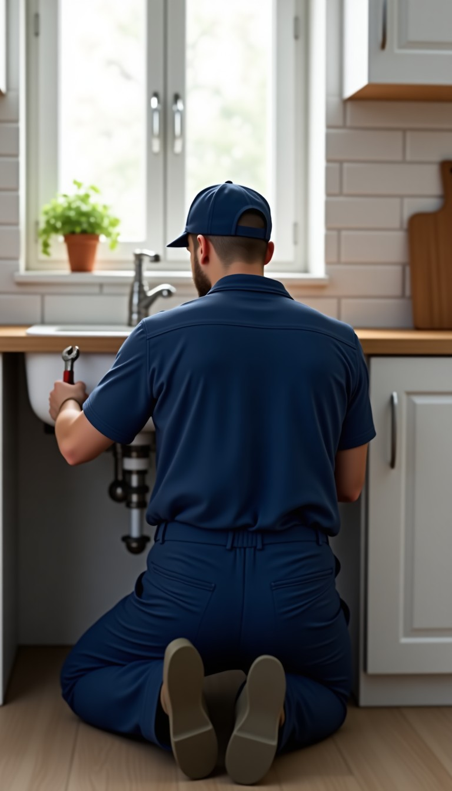
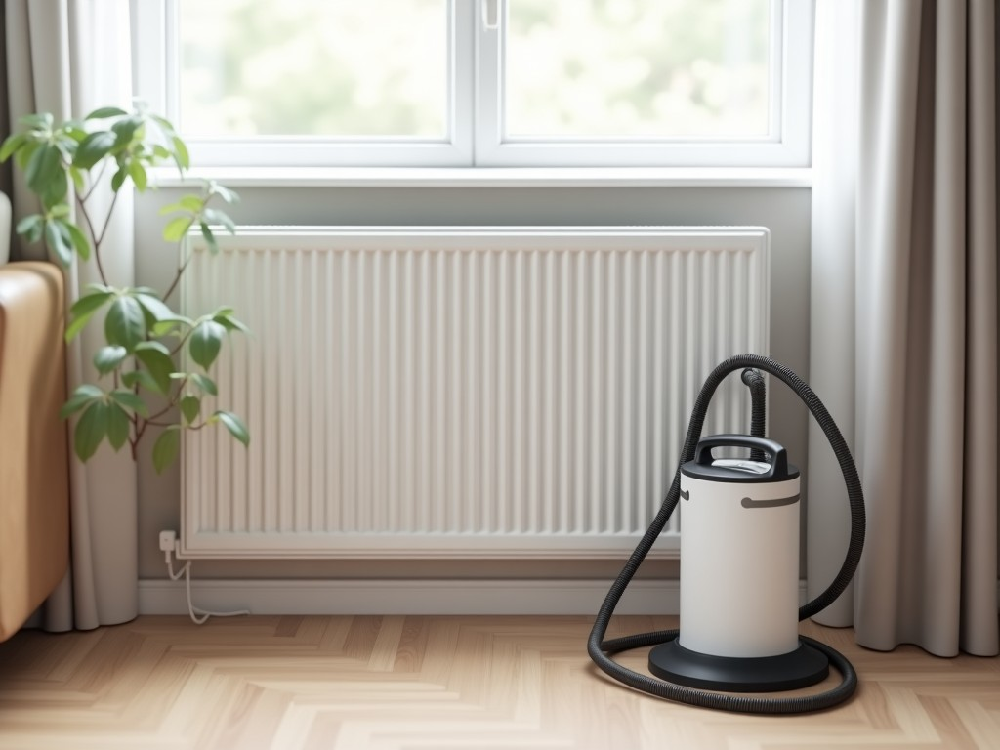
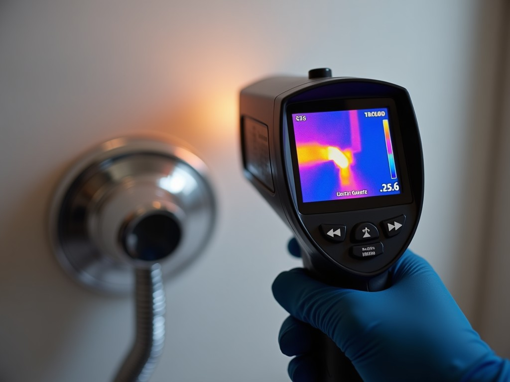
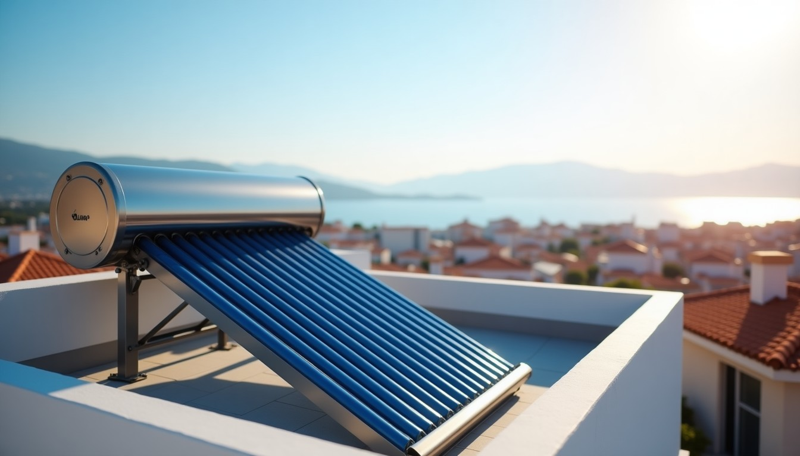
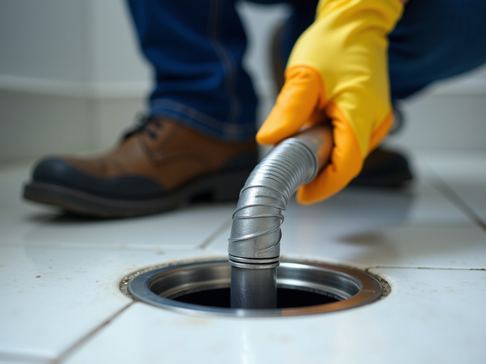
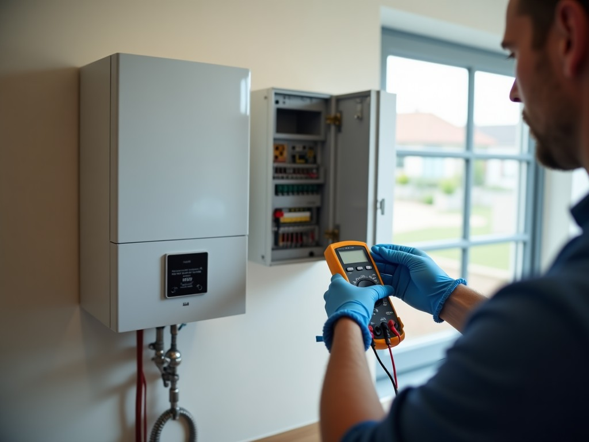
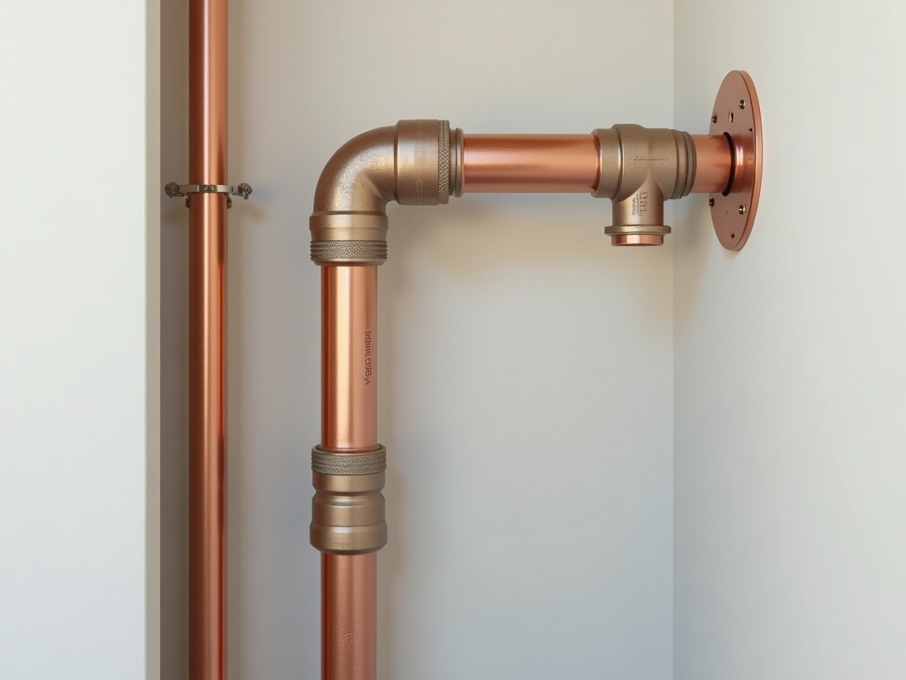
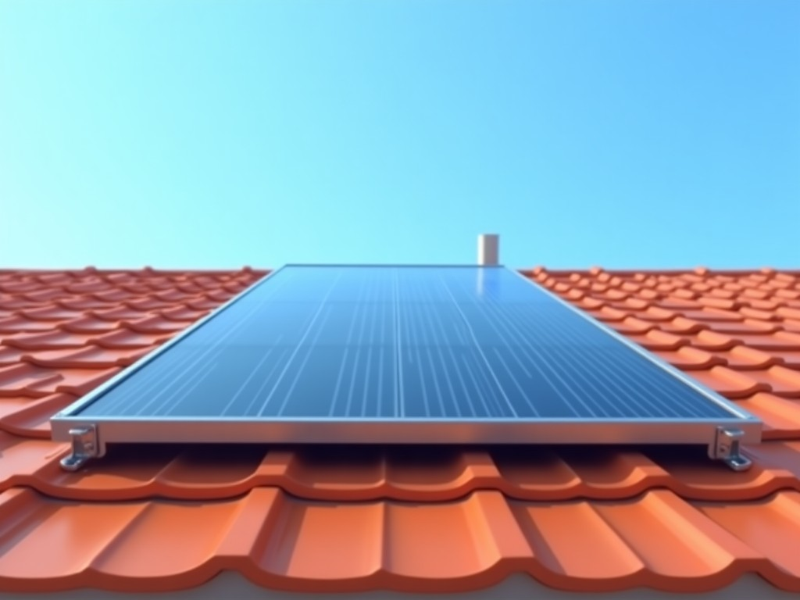
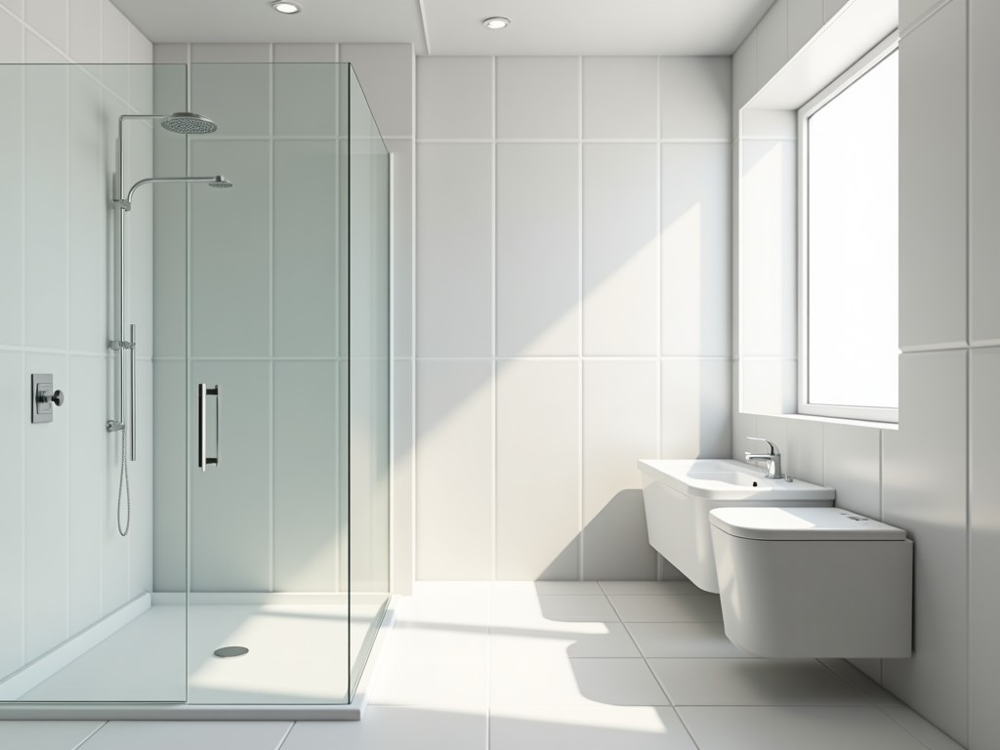
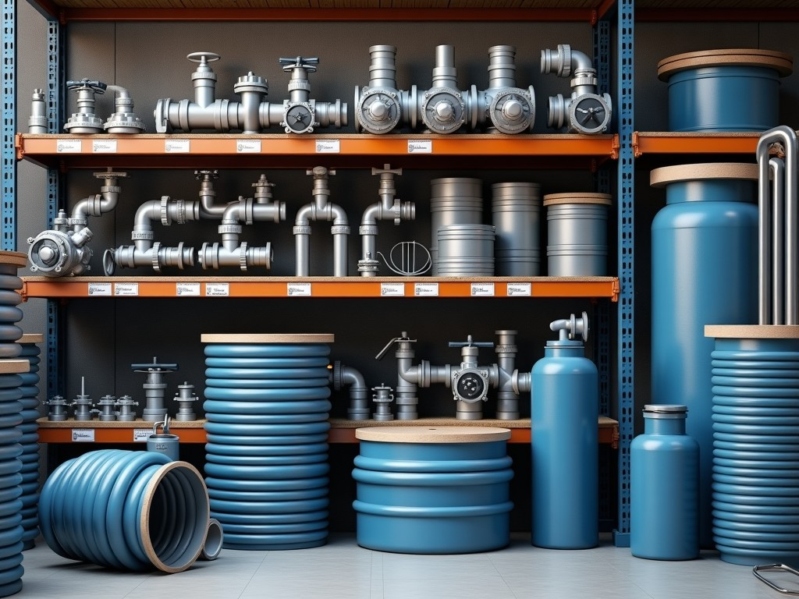

Güneş enerjisi, su tesisatı, kombi ve petek bakımı, tıkanık açma. Mersin genelinde, akşam 22:00'ye kadar.
Arıza bildir 📞 0553 956 77 51Sorunu ve ilçenizi seçin; mesajınız hazır olarak WhatsApp'a gitsin. Varsa fotoğraf ya da kısa video da ekleyin, gelmeden önce ne gerektiğini görelim.
Evdeki kişi sayısını girin; uygun depo boyunu ve elektrikli termosifona göre yaklaşık yıllık tasarrufu görün.
Gördüklerinizi işaretleyin; en olası nedeni ve ne yapılması gerektiğini söyleyelim.

Doğalgaz tasarrufu, peteklerde uzun ömür, temiz ve sağlıklı ortam.
Randevu al
Her hizmet yayında ayrı bir sayfa; "Mersin tıkanık açma", "Mersin güneş enerjisi" diye arayan doğrudan oraya gelir.




Kaliteli ürün, uygun fiyat. Ürüne dokunun, fiyatını WhatsApp'tan sorun.

Güneş paneliFiyat sor →Kombi ve petekFiyat sor →
Batarya ve armatürFiyat sor →Boru ve bağlantı parçalarıFiyat sor →
Hidrofor ve pompaFiyat sor →Taslaktaki görseller temsilîdir; yayında kendi ürün ve iş fotoğraflarınızla.
Instagram videolarınız sitede akar; yeni paylaşım kendiliğinden görünür.
Instagram'da takip et TikTok📞 0553 956 77 51 · Her gün akşam 22:00'ye kadar
WhatsApp'tan yazın Google'da gör